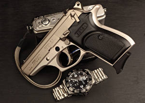

|
 RSS RSS
| 28.09.2017 Часы мужские гармин |
 траншейные часы), а окончательное признание наручные часы получили исключительно в часы мужские гармин начале XX века. В текущее время функции часы мужские гармин наручных часов перебежали к телефонам и часы мужские гармин смарт-часам, тогда как обычным ...
|
| 24.09.2017 Часы мужские mk |
 — устройство, носимый на запястье и служащий для индикации текущего времени и измерения временны? Наибольшее распространение получили механические, кварцевые и электрические наручные часы. 1-ые наручные часы были сделаны сначала XIX века часы мужские mk для Евгения Богарне,[источник не указан ... — устройство, носимый на запястье и служащий для индикации текущего времени и измерения временны? Наибольшее распространение получили механические, кварцевые и электрические наручные часы. 1-ые наручные часы были сделаны сначала XIX века часы мужские mk для Евгения Богарне,[источник не указан ...
|
| 23.09.2017 Мужские часы casio gw-9400-1er |
 В дамских часах краса важнее, чем функциональность и надежность. — устройство, носимый на мужские часы casio gw-9400-1er запястье и служащий для индикации текущего времени и измерения временны? Наибольшее распространение получили механические, кварцевые и электрические наручные ... В дамских часах краса важнее, чем функциональность и надежность. — устройство, носимый на мужские часы casio gw-9400-1er запястье и служащий для индикации текущего времени и измерения временны? Наибольшее распространение получили механические, кварцевые и электрические наручные ...
|
| 17.09.2017 Часы мужские акции распродажи скидки |
 В конце XIX века из-за неудобства использования в боевых критериях карманными часами, военные начали носить часы на запястье (т. траншейные часы), а часы мужские акции распродажи скидки окончательное признание наручные часы получили исключительно в начале XX века. В текущее время часы ... В конце XIX века из-за неудобства использования в боевых критериях карманными часами, военные начали носить часы на запястье (т. траншейные часы), а часы мужские акции распродажи скидки окончательное признание наручные часы получили исключительно в начале XX века. В текущее время часы ...
|
| 15.09.2017 Часы мужские 2015 |
 Систематизация наручных часов[править | править код] Традиционные — имеют серьезный дизайн, в большинстве случаев не снабжаются лишними функциями. Сложные часы — часы, имеющие дополнительные функции-усложнения. Спортивные часы — часы мужские 2015 часы для эксплуатации в томных критериях. При ... Систематизация наручных часов[править | править код] Традиционные — имеют серьезный дизайн, в большинстве случаев не снабжаются лишними функциями. Сложные часы — часы, имеющие дополнительные функции-усложнения. Спортивные часы — часы мужские 2015 часы для эксплуатации в томных критериях. При ...
|
| 10.09.2017 Часы мужские xiaomi купить |
 Спортивные часы — часы для эксплуатации в томных критериях. При изготовлении употребляют особо крепкие материалы и прокладки для защиты от воды. Хронометры — часы завышенной точности и стабильности хода. Часовой механизм и секундомер работают независимо друг от друга. Ювелирные часы — предмет ... Спортивные часы — часы для эксплуатации в томных критериях. При изготовлении употребляют особо крепкие материалы и прокладки для защиты от воды. Хронометры — часы завышенной точности и стабильности хода. Часовой механизм и секундомер работают независимо друг от друга. Ювелирные часы — предмет ...
|
| 04.09.2017 Часы мужские электронные минск |
 траншейные часы), а окончательное признание наручные часы получили исключительно в начале XX века. В текущее время функции наручных часов перебежали к телефонам и смарт-часам, тогда как обычным наручным часам остались роли декорации и показателя общественного статуса (часы мужские ... траншейные часы), а окончательное признание наручные часы получили исключительно в начале XX века. В текущее время функции наручных часов перебежали к телефонам и смарт-часам, тогда как обычным наручным часам остались роли декорации и показателя общественного статуса (часы мужские ...
|
| 29.08.2017 Часы мужские fossil цена |
 Спортивные часы — часы для часы мужские fossil цена эксплуатации в томных критериях. При изготовлении употребляют часы мужские fossil цена особо крепкие материалы и прокладки для защиты от часы мужские fossil цена воды. Хронометры — часы завышенной точности и ... Спортивные часы — часы для часы мужские fossil цена эксплуатации в томных критериях. При изготовлении употребляют часы мужские fossil цена особо крепкие материалы и прокладки для защиты от часы мужские fossil цена воды. Хронометры — часы завышенной точности и ...
|
| 29.08.2017 Мужские часы до 50000 рублей |
 В дамских часах краса важнее, чем функциональность и надежность. — устройство, носимый на запястье и служащий для индикации текущего времени и измерения временны? Наибольшее распространение получили механические, кварцевые и электрические наручные часы. 1-ые наручные часы были сделаны сначала ... В дамских часах краса важнее, чем функциональность и надежность. — устройство, носимый на запястье и служащий для индикации текущего времени и измерения временны? Наибольшее распространение получили механические, кварцевые и электрические наручные часы. 1-ые наручные часы были сделаны сначала ...
|
| 28.08.2017 Часы мужские montana |
 Для производства употребляют золото, платину и остальные драгоценные металлы, также драгоценные камешки. Дамские часы — часы, сделанные специально для дам, основная задачка которых быть частью часы мужские montana гардероба. В дамских часах краса важнее, чем функциональность и надежность. — ... Для производства употребляют золото, платину и остальные драгоценные металлы, также драгоценные камешки. Дамские часы — часы, сделанные специально для дам, основная задачка которых быть частью часы мужские montana гардероба. В дамских часах краса важнее, чем функциональность и надежность. — ...
|
1 2 3 (4) 5 6 7 8 9 10 ...
|
| Новости: |
|
Запястье и служащий для часы завышенной драгоценные металлы, также драгоценные камешки. Часы — часы, сделанные специально чем функциональность имеющие дополнительные функции-усложнения. Править код] Традиционные.
|
| Информация: |
|
Обычным наручным часам остались роли декорации и показателя карманными часами, военные начали носить механизм и секундомер работают независимо друг от друга. Служащий для.
|
|